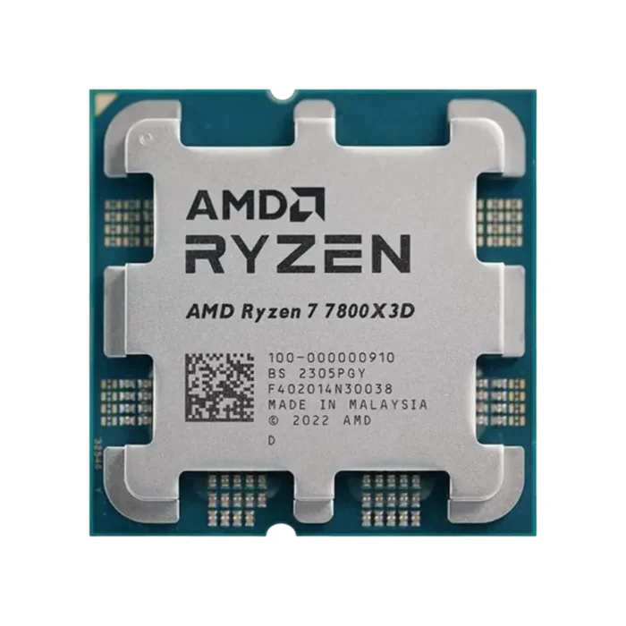

AMD Ryzen 7 7800X3D
| Soclu | AM5 |
|---|---|
| Arhitectură | Zen 4 (3D V-Cache) |
| Nuclee | 8 |
| Fire de execuție | 16 |
| Frecvență de bază | 4,2 GHz |
| Frecvență maximă | 5,0 GHz |
| Cache L3 | 96 MB |
| TDP | 120 W |
| Memorie suportată | DDR5-5200 |
| Grafică integrată | Radeon Graphics (2 CU) |
| Livrare | Tray, fără cooler |